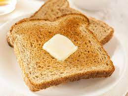

Perfect Toast

Perfect Toast Every Time!
This toast is good for any occasion at any time.
Ingredients
- Bread:Whatever your favorite bread is.
- Butter:1 tbsp per piece of toast.
- Toppings:This is optional. You can choose to add jelly, jam, or anything else your heart desires to put on toast.
Steps
- Heat the oven.Heat the oven by putting it on a high broil.
- Butter the bread.Slice the butter into 1/2 tbsp pieces and place them evenly spaced on the bread.
- Put bread in the oven.Put the bread in the oven. Leave it in for up to 2 minutes. Any longer and you will burn the bread.
- Enjoy!Remove the toast from the oven and enjoy.